Capítulo 4 Regresión Lineal
La regresión lineal es un método estadístico que intenta predecir una variable de interes (dependiente) a partir de otras variables que se consideran influyentes (independientes) y se relacionan directamente con ella. Por ejemplo, hay estudios que sugieren la relacion entre el tamallo del pétalo (\(P\)) y el sépalo de una flor (\(S\)), en algunal flores se aproxima el tamaño del pétalo multiplicando por 3 el tamaño del sépalo, es decir, \(P=3*S\), esta relación es un ejemplo simple de lo que es la regresión lineal de solo dos variables.
En general si tenemos una variable \(y\) dependiente y \(n\) variables independientes \(x1, x_2, ..., x_n\) un modelo de regresión lineal tiene la forma \[y=c+c_1x_1+c_2x_2+...+c_nx_n\] donde los coeficientes \(c_j\) son los coeficientes del modelo y \(c\) es el coeficiente independiente, en algunos casos es llamado intercept.
4.1 Identificando relación entre variables
Una de las primeras cosas a verificar antes de realizar el análisis de regresión es la relación existente entre la variable dependiente con las variables independientes, existen diversas manerar de comprobarlo, entre las que veremos están:
- Visual: Se realiza un gráfico entre la variable dependiente y la variable independiente a estudiar, si se nota un tipo de linealidad entre los datos podemos pensar en incluir la variable independiente en el modelo. Por ejemplo, en el siguiente ejemplo se nota una cierta linealidad entre las variables.
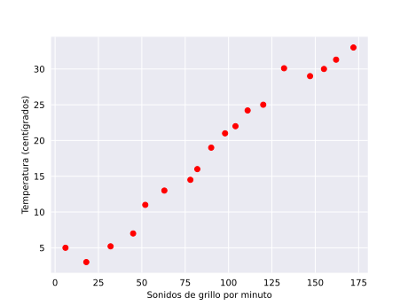
- Cuantitativa: Una manera cuantitativa de medir la relación entre variables es usar el indice de correlacion, el cualn varía entre -1 y 1 , entre mas cerca de -1 o 1 esta el indice de correlacción entre variables mayor es su relación, en general, decimos que si el índice de correlacion entre variables es mayor a \(0.5\) o menor a \(-0.5\)
Usaremos el conjunto de datos mtcars en R para ilustrar de ahora en adelante el proceso de regresión lineal.
4.1.1 Identificando relación entre variables con R
- Visual: Usamos la función plot() vista previamente para grificar el cruce enntre variables, por ejemplo, entre las variables mpg y disp notamos un cierto comportamiento lineal.
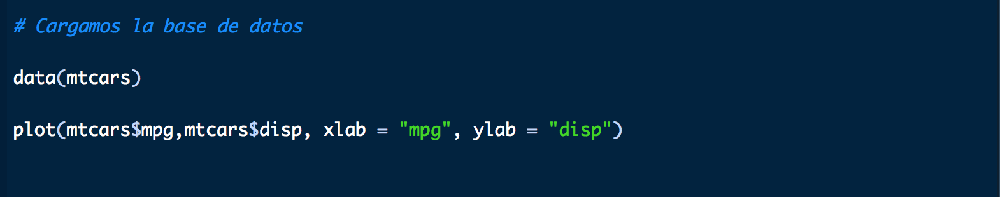
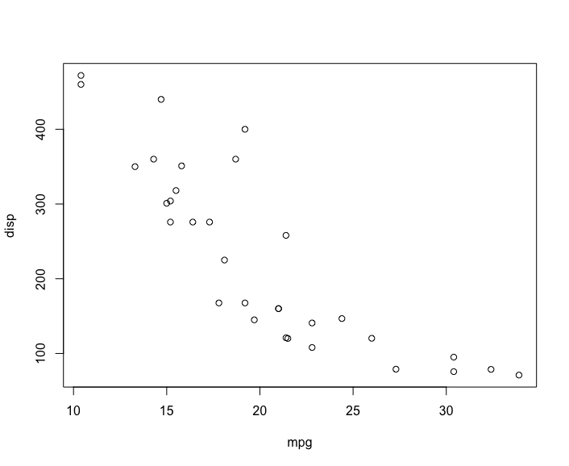
Con la función \(plot()\) tenemos la ventaja de que simplemente pasando como argumento el conjunto de datos no arroja una imagen con todos los cruces posibles.
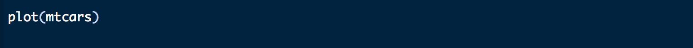
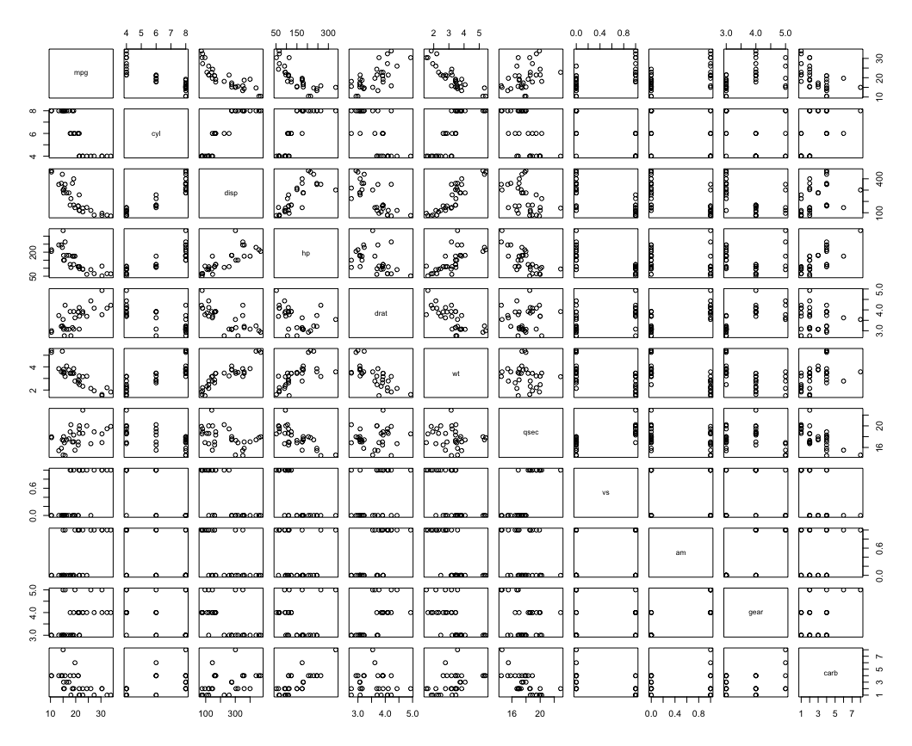
- Cuantitativa: La función cor() nos permite hallar la correlación entre variables
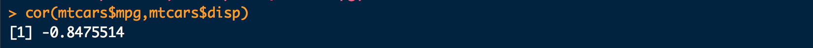
Este valor de \(-0.84\) nos confirma la posible relacion que existe entre las variables mpg disp. De igual manera podemos aplicar la función cor() a todo el cojunto de datos arrojando una matriz con todo los valores posibles de correlaciones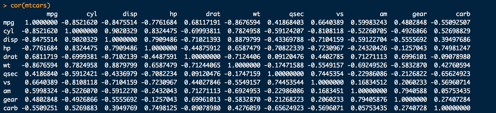
4.1.2 Identificando relación entre variables con python
- Visual: En Python usaremos de nuevo la librería Matplotlib, para abtener el gráfico del cruce entre variables, de igual manera notamos el comportamiento lineal entre las variables.
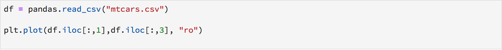
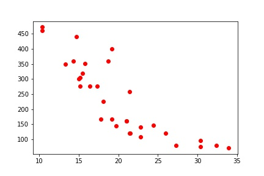
Ahora, si queremos realizar un solo grafico con el cruce de todas las variables, como no los permite la función cor() en R, debemos implementar una librería llamada Seaborn, la cual nos dara el resultado deseado haciendo uso de la función .pairplot(), la cual le ingresaremos como argumentos: kind (para el tipo de grafico) y palette (para el color)
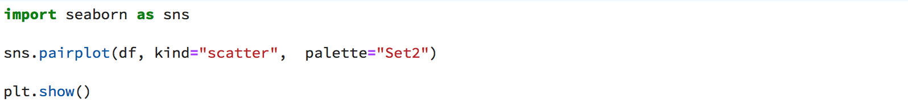
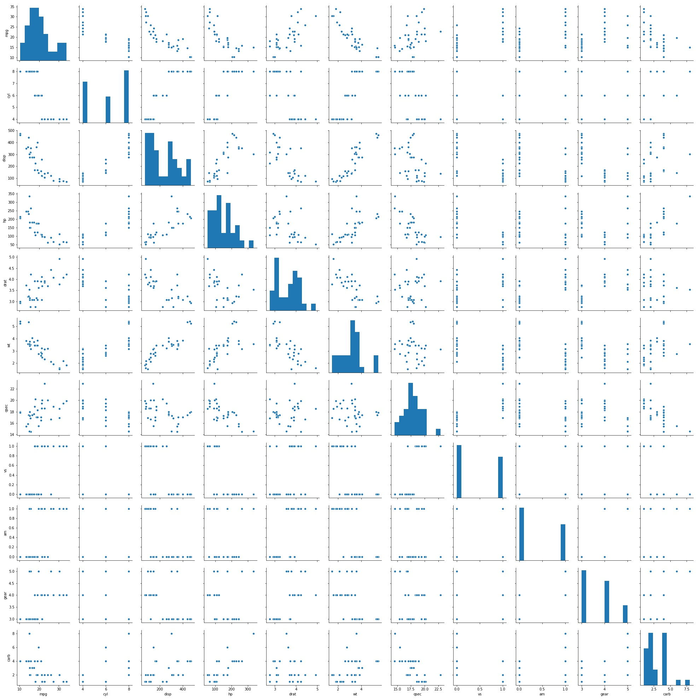
- Cuantitativo: Para obtener la matriz de correlación entre las variables de nuestro conjunto de datos, hacemos uso de la función .cor() de la librería Pandas. En el caso que queramos alguna correlación en especifico filtramos los elementos de la matriz anterior.
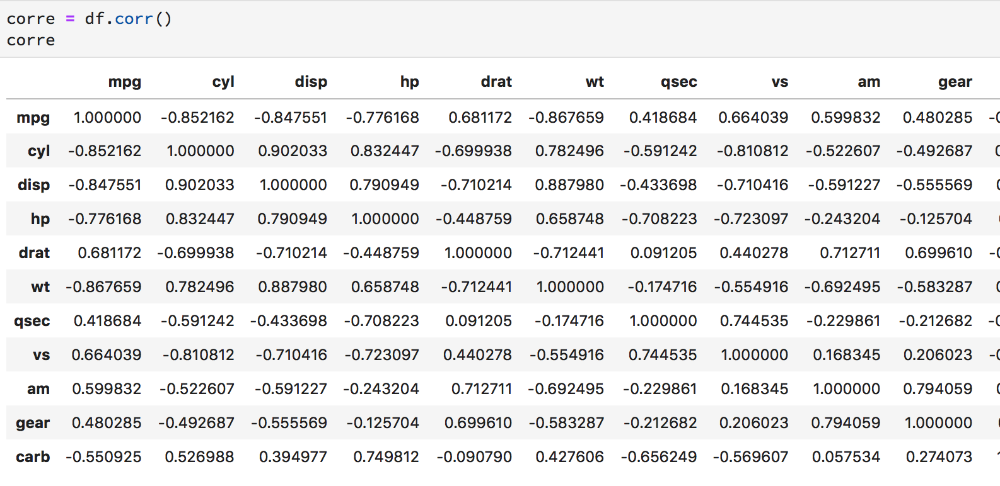
4.2 Transformando variables
Una de las principales hipótesis en la regresión lineal es la normalidad de las variables implicadas, es decir, que las variables provengan de una distribución normal. Pero, ¿como identificamos este comportamiento en una variable? La forma mas sencilla es inspeccionando el histograma proveniente de dicha variable y corroborar un comportamiento acampanado, como por ejemplo:
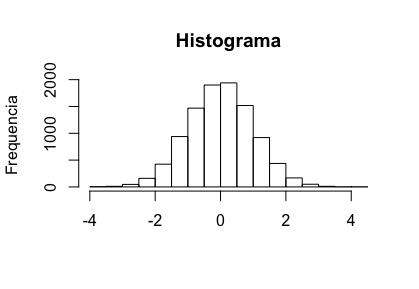
Pero en muchos casos, las variables no poseen este comportamiento, por lo tanto debo aplicar transformaciones que imiten el comportamiento acampanado de la gráfica anterior, las transformaciones más comunes son: \(y=x^2\), \(y=\sqrt{x}\), \(y=ln(x)\) y \(y=\frac{1}{x}\), en la siguiente gráfica podemos apreciar el efecto de estas transformaciones.
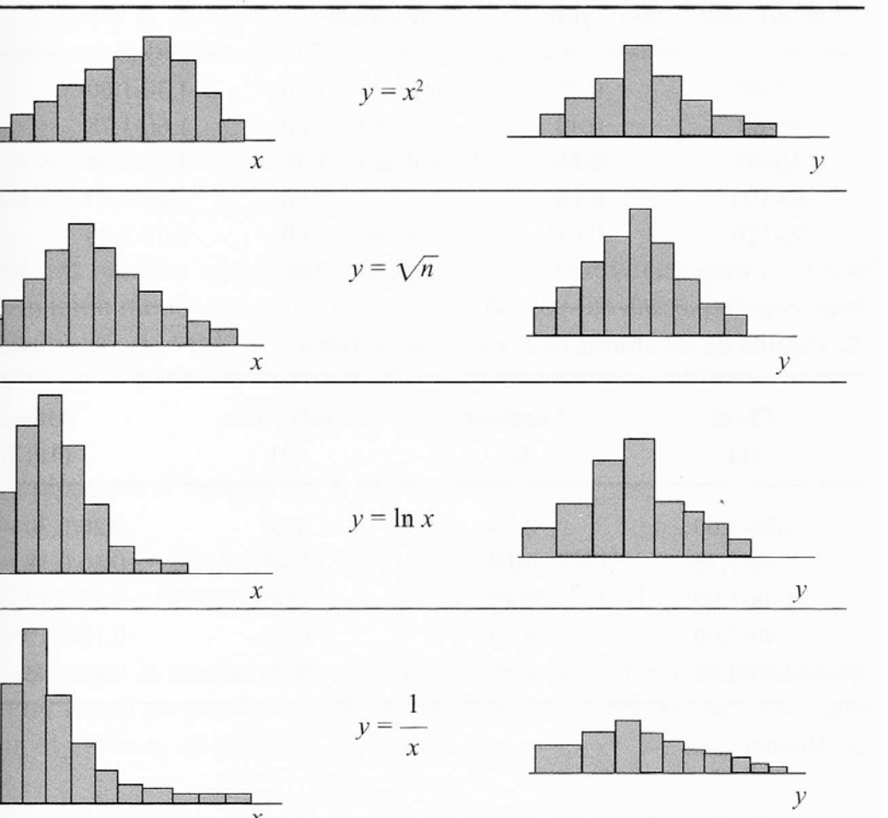
Esta última imagen nos da una idea de cuando debemos aplicar alguna de las transformaciones anteriores. Ahora veremos como aplicarlas en los respectivos lenguajes.
4.2.1 Aplicando transformaciones de variables en R
Esta tarea es muy facil de ejecutar en R, supongamos que estamos trabajando con la variable x del conjunto de datos df, el código para realizar estas transformaciones son:
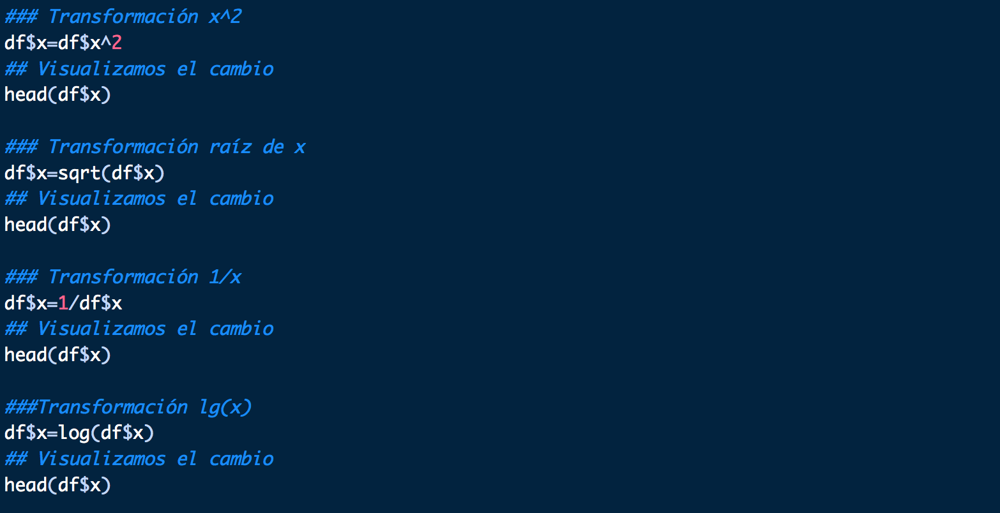
4.2.2 Aplicando transformaciones de variables en Python
En python es facil realizar las transformaciones menos la del logaritmo, para la cual usaremos la librería Math en especifico la función .log() junto a la función .apply, pues la función .log() se aplica a números y queremos aplicarla a una variable completa.
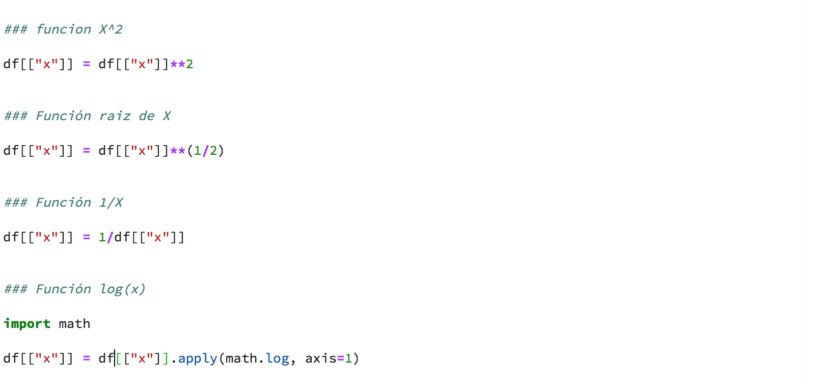
4.3 Eliminando el efecto de colinealidad entre variables independientes.
Otra hipotesis importante antes de realizar el modelo de regresión, es la no colinealidad entre las variables, es decir no debe haber una relación lineal entre variables independientes, en caso de descubrir este efecto deberiamos eliminar una de estas variables y quedarnos con la otra.
La forma de identificar colinealidad es exactamente igual a la forma de encontrar correlaciones entre las variables vista al principio de este capítulo, primero debemos calcular el índice de correlación entre variables, si se encuentra un alta correlación entre un par de variables independientes se procede a revisar la gráfica del cruce de dichas variable, si se observa una clara relación linea procedemos a eliminar alguna de ellas.
4.4 Eliminación de las variables categoricas
En los modelos de regresión lineal las variables categóricas no cumplen las hipotesis del modelo, pues no cumplen con la hipotesis de normalidad. Recordemos que una variable categorica es una variable que toma unos valores fijos ya conocidos, por ejemplo, la variable que toma los valores \(1, 2, 3, 4, 5, 6\) que representa los posibles valores que toma el lanzamiento de un dado es una variable categórica, o la variable que toma los valores de Si o No que se refiere al consumo de un producto en especifico. Por lo tanto debemos saber como eliminar variables de nuestro conjunto de datos.
4.4.1 Eliminación de variables en R
Supongamos que tenemos un conjunto de datos llamados Datos la variable Var1, si deseamos eliminarla usamos el siguiente código, en el cual el simbolo ! se un inducador de que queremos eliminar dicha variable.
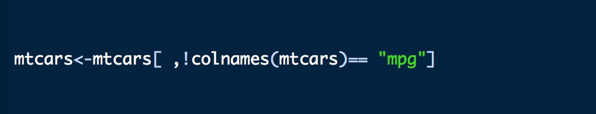
4.4.2 Eliminación de variables en Python
De igual manera suponiendo que tenemos el mismo conjunto de datos y la misma variable a eliminar en Python, usamos la función .drop() para eliminar la variable, axis=1hace referencia que estamos eliminando una columna.
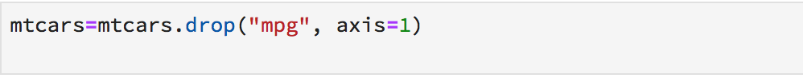
4.5 Aplicando el modelo de regresión lineal
Una vez que elejimos las variables que deseamos usar en el modelo debemos conocer que funciones usar y que parámetros.
4.5.1 Aplicando el modelo de regresion lineal en R
Em R existen varias formas de aplicar este modelo, gracias al gran número de librerias existentes, sin embargo, ya R trae por defecto la funcíon lm() la cual nos permite construir el modelo de una forma sencilla.
primero describiremos los parametros mas importantes que debemos ingresar:
formula: Sin duda el parámetro mas importante, es el que le indica a la función cuales son las variables independientes y la variable dependiente, por ejemplo si tenemos las variables \(x_1\), \(x_2\), \(x_3\) donde las variables independientes son \(x_2\) y \(x_3\) y la variable dependiente es \(x_1\), el paramétro formula debe ser : \(x_1 \sim x_2 + x_3\). En el caso de que deseamos usar todas las variables del conjunto de datos como independientes, simplemente usamos \(x_1 \sim .\)
data: El conjunto de datos a utilizar para realizar el modelo.
subset: Un vector donde se especifican las filas a usar del modelo.
weights: En el ajuste del modelo se calculan los parámetros que representan a cada variable independiente.Para realizar dicho ajuste se realiza un metodo de optimización para optener los parametros que mejor se ajuste a la recta de regresión, el parámetro weights es un vector numerico que se encarga de mejorar esta aproximacion y debe coincidir con el número de observaciones
na.action: En el caso de que halla valores NAs, este parámetro acepata una función que indica que hacer con estos valores problemas, lo usual es utilizar nn.fail, na.omit o na.exclude
method: Hace referecia al método de aproximación de los parámetros de los coeficientes, el metodo por defecto es el de los mínimos cuadrados, el cual se denota por qr
Ahora supongamos que tenemun conjunto de datos llamados irisP el cual cuenta con la variable dependiente Sepal.Length y las variables independientes Sepal.Width , Petal.Length, Petal.Width, para realizar el modelo con los parámetros ya mencionados tenemos dos opciones, la primera colocando el nombre de todas las variables o haciendo uso de la abreviación de la formula ya mencionado.
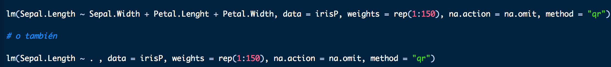
Si hacemos uso del codigo anterior obtendremos la informacion básica del modelo, la cual se presenta en la siguiente imagen:
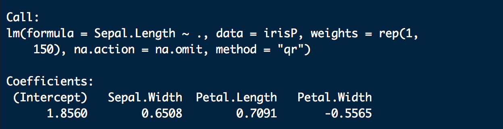
En esta imagen se nos proporciona el valor que se introdujo en el modelo y los coeficientes de la regresión. Si queremos los datos del modelo usamos la función summary()
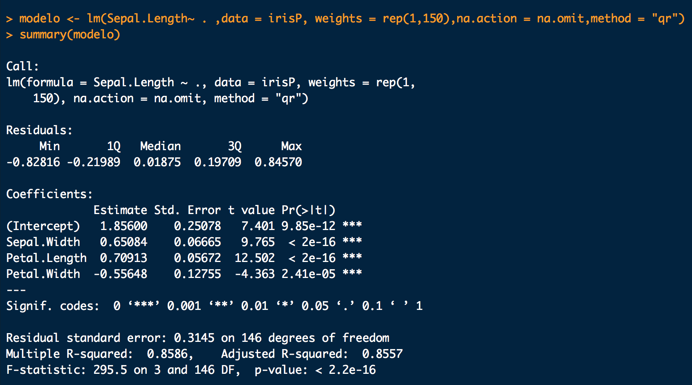
4.5.2 Aplicando el modelo de regresion lineal en Python:
Existen varias librerías para aplicar modelos lineales en Python entre las mas populares estan StatsModels y sklearn, usaremos la primera por ser la que nos proporciona unas funciones parecidas a las que tenemos en R. Como el objetivo de este curso es aprender a usar la herramienta no incluiremos algunos parámetros como los que describimos en R.
Para crear el modelo usando la librería StatsModels, debemos impotar la libreria de la manera usual, luego seleccionamos la variable dependiente e independientes, a diferencia de R StatsModel no calcula el valor del intercept por defecto, por lo tanto debemos espicificarlo de manera explicita, esto lo hacemos con la función add_constant() de la misma librería, luego usando la función .OLS() para crear el modelo y la función .fit() para entrenarlo, finalmente imprimimos los datos del modelo usando la función .summary()
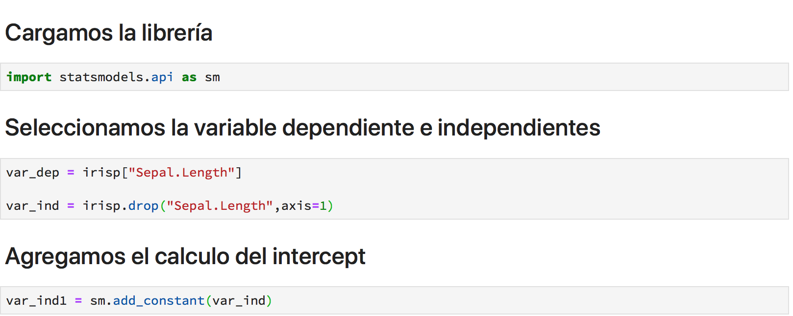
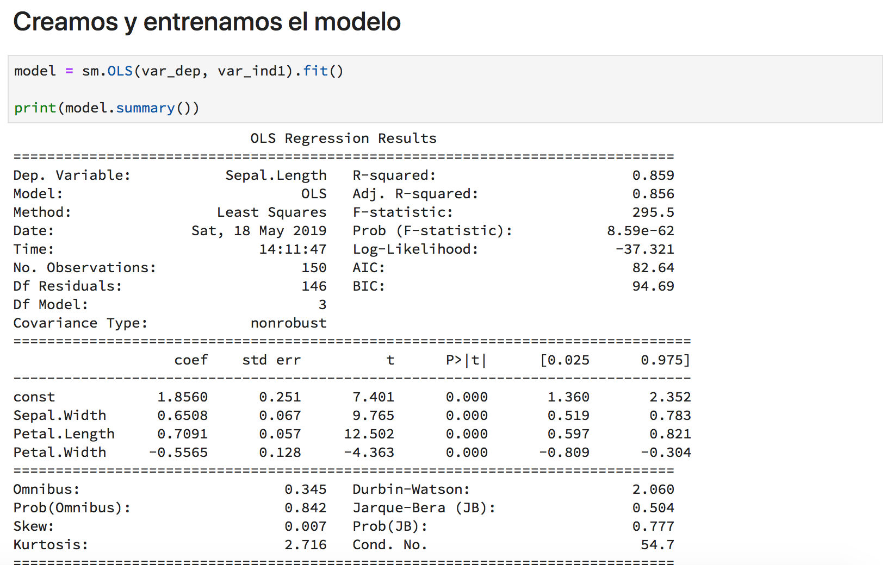
4.6 Como interpretar los resultados del modelo
Ya vimos que una vez construido el modelo usando funciones con el nombre de summary obtenemos información sobre caracteristicas del los modelos. Describiremos las mas importantes y como entender su efecto en el modelo.
4.6.1 Interpretar con summary en R:
- Residuals: Al calcular el modelo la función Summary calcula las predicciones para los mismos datos con los que se entreno el modelo, la variable residuals nos da los errores de predicción. En esta variable el menor, el mayor, la mediana, primer cuantil y tercer cuantil de los errores. Debemos realizar un hostograma de los errores del modelo, si este histograma no muestra un comportmiento normal, debemos pensar rapidamente que nuestro modelo no es el adecuado. Acontinuación se meuestra el codigo y un histograma ideal, suponiendo que creamos un modelo con nombre modelo
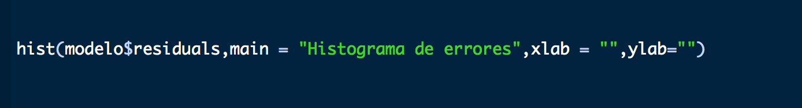
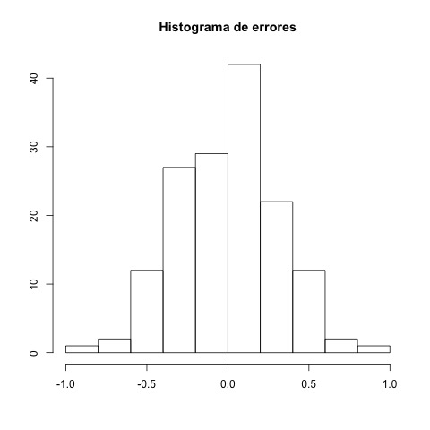
- Coeficients: Luego se muestran los coecicientes del modelo en forma de matriz:
- En la primera columna se muestran los coeficientes del modelo.
- En la segunda columna se muestran las desviaciones estandar de cada coeficientes.
- Luego se muestran los valores correspondientes al estadístico \(t\), con el fin de realizar una prueba de hipotesis a los coeficiente.
- En la cuarta columna se muestran los \(p\)-valors de la prueba de hipotesis, los resultados de estos valores deben ser lo mas pequeño posibles, en general, se esperan que sean menores a 0.05, en caso de que esto no ocurra debemos pensar en eliminar la variable del modelo, o realizar alguna transformación adecuada.
Residual standar error: Nos da una idea de como varia el error de precisión del modelo, es decir, nos dice como varian las predicciones de las observaciones.
Multiple R-squared and Adjuste R-squared : En ambos casos ambas valores explican el valor de la varianza explicada del modelo, la diferencia en la segunda se considera el número de variables involucradas en el modelo, debido a esto la mayoría de los casos se considera es la segunda, se buscan valore mayores a 0.7 o 0.8.
F-statistic: Nos presenta el valor del estadístico F, luego los grado de libertas y por ultimo el \(p\)-valor de la prueba de hipotesis que consiste en constrastar el modelo resultante con el modelo que únicamente consta de un termino intercept.
4.6.2 Interpretar con summary en Python:
El summary en este caso nos da mucha mas información que en R nos concentraremos en las mismas variables del summary y mencionaremos algunas otras que pueden ser de utilidad, este summary se dividen en dos cuadros:
Información estadística del modelo: en esta primera matriz la información mas destacada es el nombre de la variable dependiente, el número de observaciones, Multiple R-squared, Adjuste R-squared , el valor de F-statistic
Información estadística acerca de los coeficientes del modelo: en esta matriz se encuentra practicamente la misma información concerniente a los valores de los coeficientes del modelo con la información extra que consiste en los intervalos de confianza de los coeficientes.
Este summary no nos aporta información clara sobre los residuos del modelo, para poder obtener un histograma para ver su comportamiento usamos el siguiente código, tomando en cuenta que nuestro modelo se llama modelo
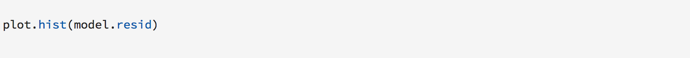
4.7 Realizando predicciones con nuestro modelo.
El objetivo principal de crear modelos es usarlos para predecir valores a partir de las variables independientes, a continuación presentaremos los códigos para realizar dicha predicción.
4.7.1 Realizando predicciones con R
Para realizar predicciones con R haremos uso de la función predict(). Debemos ser cuidados con los conjunto de datos que usaremos para predecir, estos datos deben tener las columnad con el mismo nombre y no tener valores faltantas o espacios en blanco. ahora se anexa el codigo para hacer la predicción.
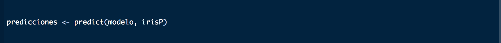
4.7.2 Realizando predicciones con Python
Al realizar predicciones en python debemos tener en claro el orden del conjunto de datos, es decir, debemos tener las variables independientes en el mismo orden con el que se entreno el modelo, ademas, debemos agregar una variable intercep para que el modelo tenga todos los parámetros establecidos.
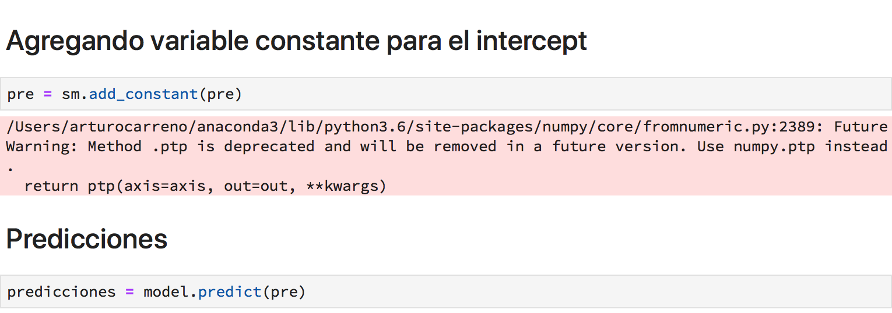